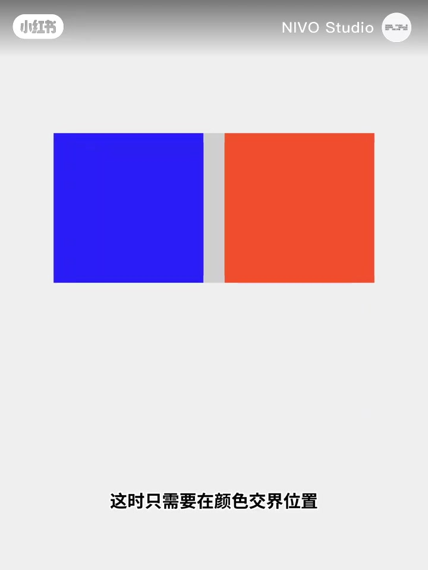
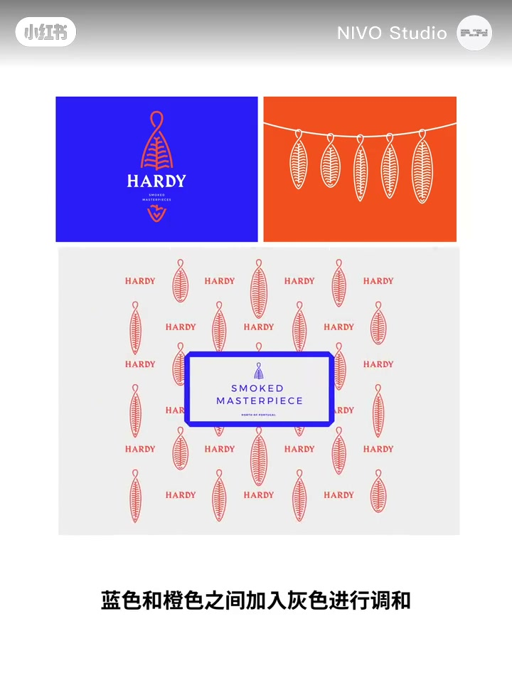
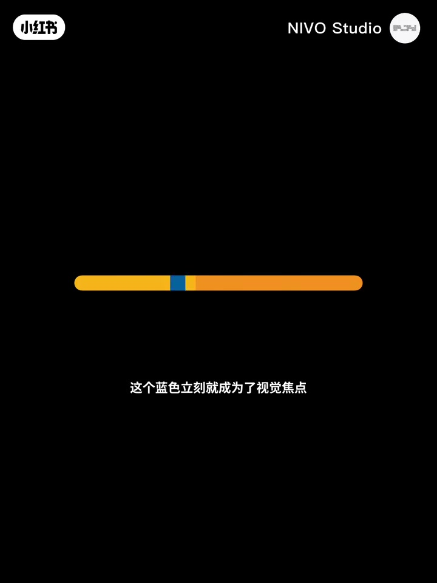
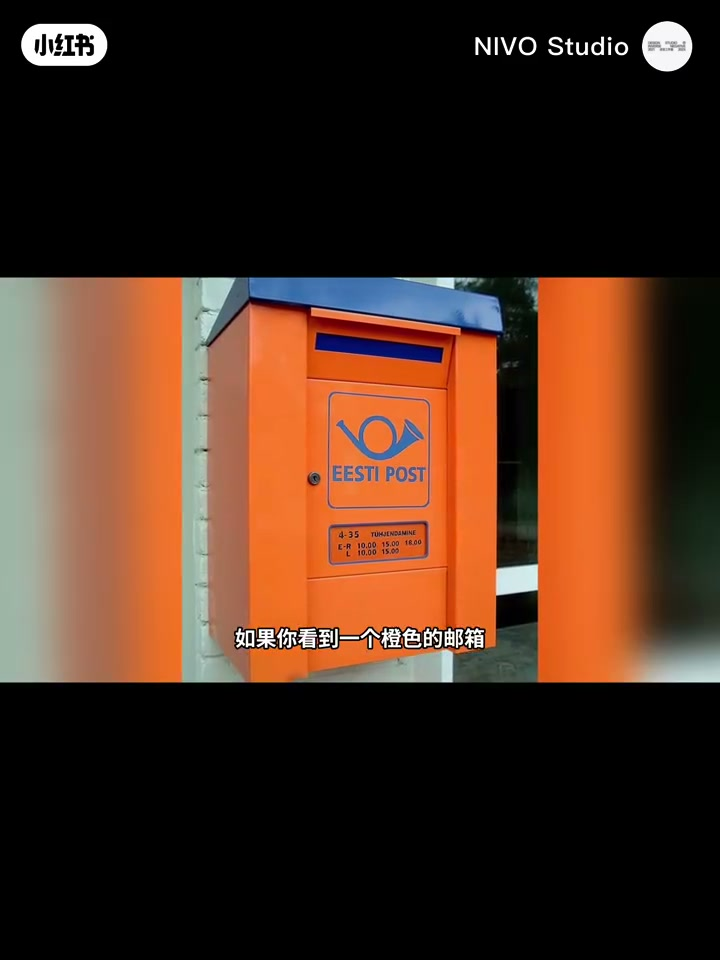
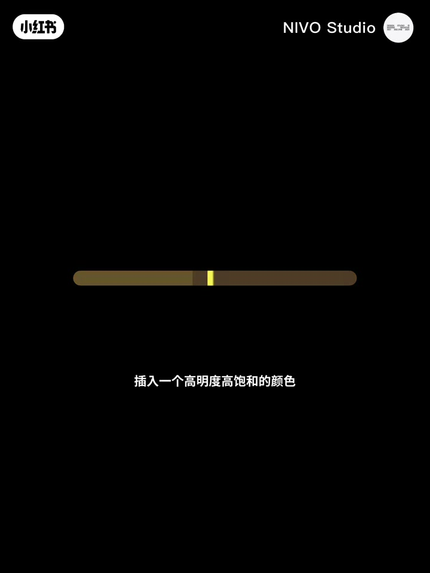

内容要点
「NIVO Studio」论证配色高低差在「一点点」插入：高纯度互补色太夺目易疲劳，交界处插一小块中性色做色彩分割；近似色里插入互补色或亮灰做色彩强调。并举邮箱蓝字、公共标识、暗调路牌等高对比场景，收束为生活中常见的四种强调示例。
知识结构
互补交界插中性色缓和；品牌蓝橙+灰延展到物料。
近似色插互补蓝成焦点；橙黄主色里蓝常作强调。
亮灰标识性；高对比公共标识；暗调插高明度高饱和；路牌夜灯。
会配色往往不是换一套色相，而是会不会在交界处「塞一点点」中性色或强调色，让夺目变成可控。
00:00-00:31互补色太烈：交界插灰做分割
开场一组高纯度互补色：夺目但过浓易疲劳。只需在颜色交界插入一小块中性色使二者分离，整体更缓和——这叫色彩的分割。口播举品牌视觉：蓝与橙之间加灰调和，并从线上延展到物料，大胆中带谨慎。再用生活化具象例子帮观众建立直觉。


00:31-02:30近似色里的强调：互补、亮灰与暗调提亮
近似色组里插入橙色的互补色蓝，蓝立刻成视觉焦点——色彩的强调。细察会发现蓝常以强调色出现在橙/黄为主的设计里，因互补对比最强，刺激视觉并抢注意力；橙色邮箱上重点信息几乎都是蓝色。回到近似色插入亮灰，灰也能获得较高标识性。
高对比强调引起紧张兴奋，常用於需关注的公共场所指示。再把明度饱和度降低后，插入高明度高饱和色，醒目且适用多数暗调，多用於路标或夜间照明指示牌。收尾：以上是生活中最常见的四种色彩强调示例，遇见时想起这个视频。中段约 00:31–01:00 ASR 有跳秒，叙述按前后逻辑与画面衔接。



完整转录（41段）
以下文本由 Whisper medium 模型自动转录，可能存在少量识别误差，已尽可能修正。
这是一组高纯度互补补色
虽然搭配起来很夺目
但由于过于浓烈会产生疲劳感
这时只需要在颜色交界位置插入一小块中性色
使二者分离
可以让整体配色更加缓和
哈黛薰鲑鱼的品牌视觉就很好的体现了这一点
蓝色和橙色之间加入灰色进行调合
并从线上延展到了物料上
色彩的使用大胆中带著谨慎
这就叫色彩的分割
再看两个我们更熟悉的例子
再看看这位
如此具象化的色彩分割应该好理解了吧
再来看这组近似色
这时只需要插入橙色的补色
这个蓝色立刻就成为了视觉焦点
这就叫色彩的强调
仔细观察就会发现
蓝色经常以强调色的身份
出现在各种以橙色或黄色为主的设计中
因为互补色对比最强烈
在刺激视觉的同时还能吸引注意力
如果你看到一个橙色的邮箱
上面的重点信息几乎都是蓝色的
我们再回到视频开头的这组近似色
现在插入一个亮灰色
此时这个灰色也会获得较高的标识性
不过
这种强调可以引起人们视觉上的紧张和兴奋
常用于需要引起关注的公共场所指示标识
只要用心观察세�出可见
让我们再回到开始
这次我们将明度和饱和度降低
插入一个高明度高饱和的颜色
这种强调非常醒目
适用于绝大部分暗调颜色
多用于路标指示牌
或夜间照明指示牌等
以上是生活中最常见的四种色彩强调的示例
希望你在生活中遇见它们时会想起这个视频